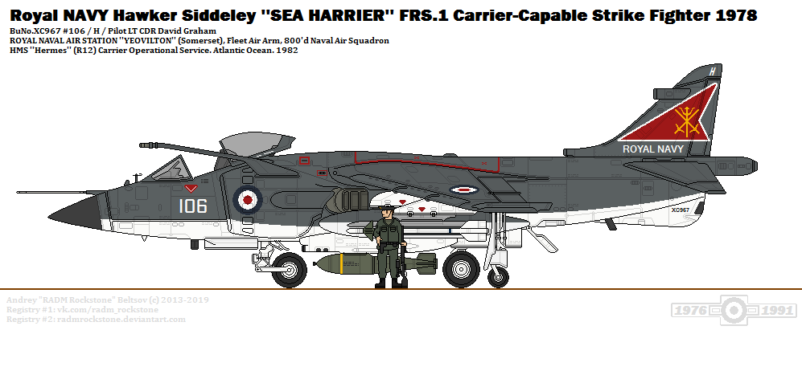
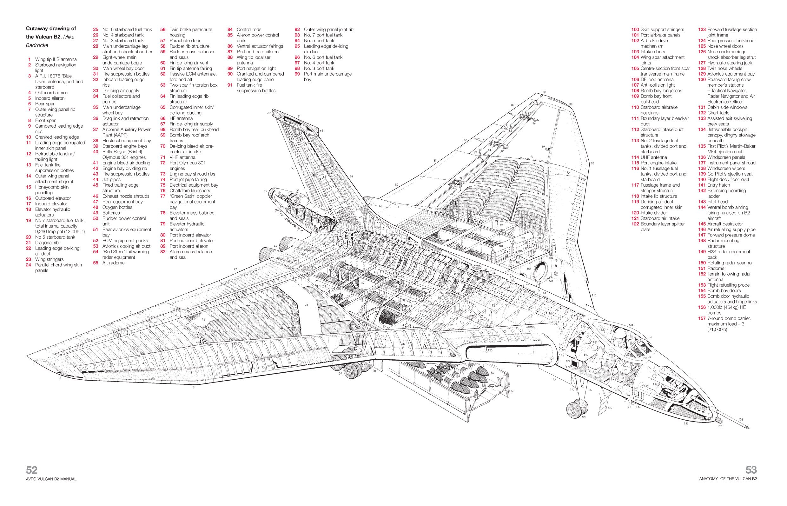
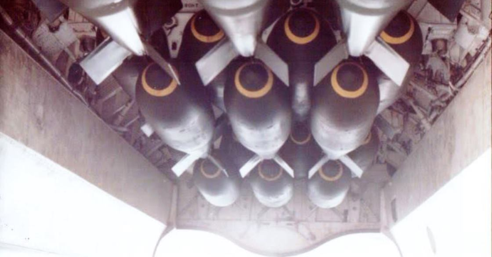
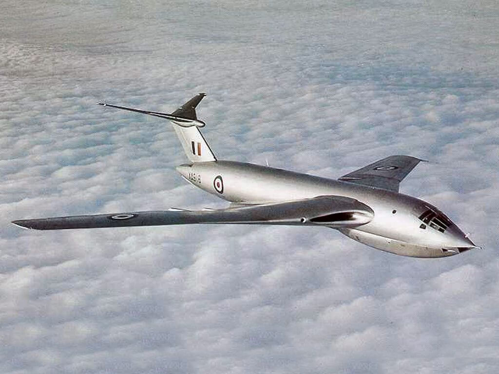
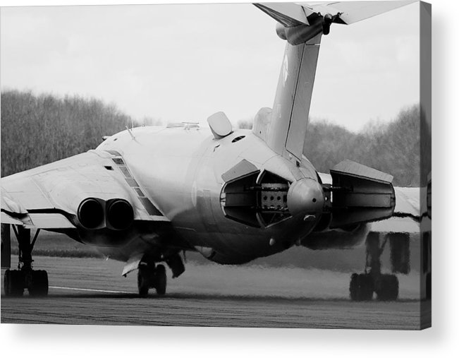
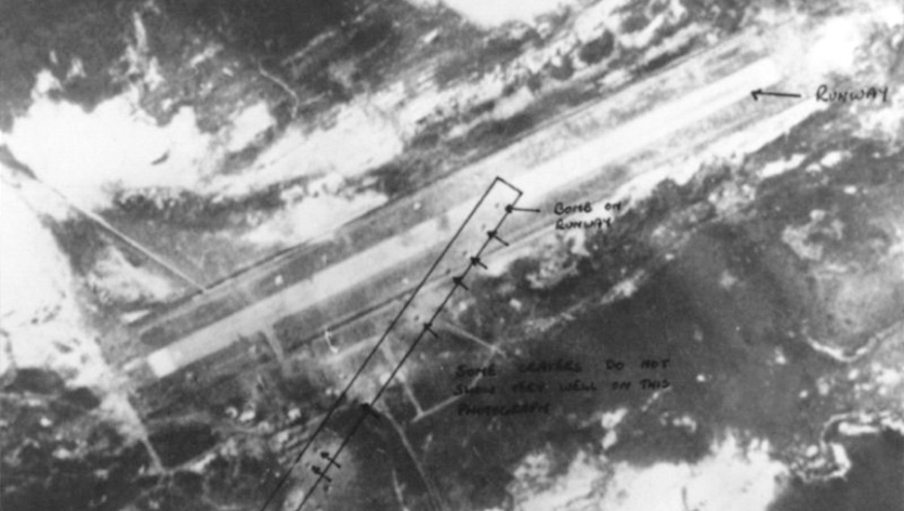
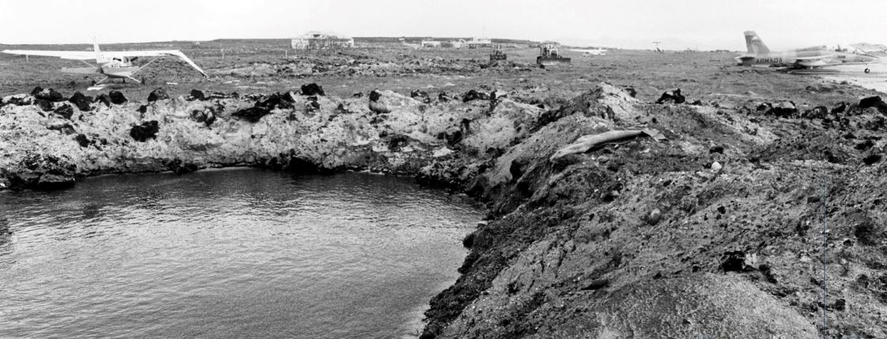
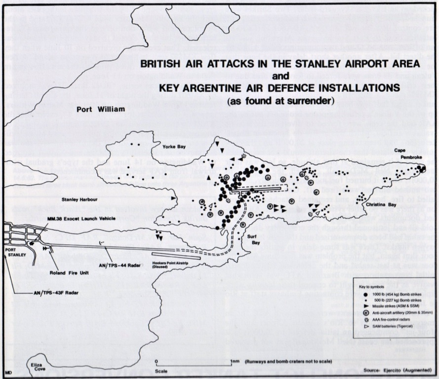
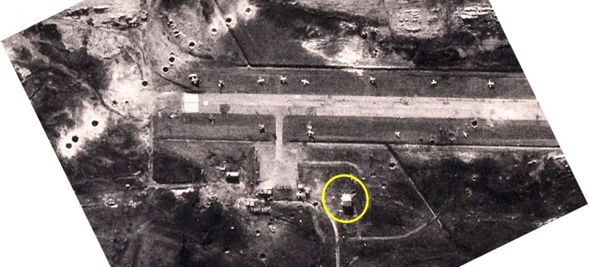

포클랜드 전쟁 잡담 - Vulcan의 폭탄
게시: 2022-01-13T06:30:16+09:00
<왜 이야기가 그렇게 돌아가는데?> 포클랜드 섬 Port Stanley의 활주로에 Vulcan 폭격기가 폭탄을 투하하겠다는 공군의 계획을 전해들은 로열네이비 원정함대의 항모 사령관 Woodward는 '뭔 쓸데없는 짓거리'라며 혀를 참. 해리어에 폭탄 실어서 투하하면 되는데 뭐하러 공중급유기 떼거리로 날려가며 그 난리를 피우느냐는 것. 그런데 영국 공군에서 내세운 이 Black Buck 작전의 합리화 중 하나는 '그렇쟎아도 현장에 해리어 수가 너무 부족하므로 소중한 해리어를 위험한 활주로 폭격 작전에 노출시킬 수 없다'는 것. 그래서 웃워드는 일단 잠자코 있었는데 정작 작전 바로 직전에 영국 공군으로부터 '우리가 폭격하고 난 뒤에, 활주로 얼마나 부서졌나 보게 해리어 띄워서 사진 촬영 좀 해줘, 대낮에~'라는 요청을 받음. 웃워드는 '미친 놈들 ㅋㅋ 해리어 보호를 위해 벌컨을 대신 투입하다더니 더 위험한 폭격직후 대낮 촬영임무에 해리어를 투입하라고?' 라며 항의. 그러나 영국 공군은 '그 사진 없으면 아르헨티나 애들이 '영국놈들의 무차별 폭격으로 민간인 살상!'이라는 선동질이 우려된다라며 징징댐. 결국 영국 공군 소원대로 이루어짐.

<고장이 나지 않으면 영국제가 아니다> 영국 공군의 최대 약점은 장비들과 기체들이 모두 영국제라는 것. 고장이 나지 않으면 영국제가 아님. 그래서 영국 공군의 모든 작전은 온갖 고장이 나는 상황을 전제로 짜여짐. 1982년 4월 30일 23시 50분, 적도 아센시온의 미군 기지에서 11대의 Victor 공중급유기와 2대의 Vulcan이 1분 간격으로 이륙. 벌컨이 2대인 이유는 1대에 혹시 문제가 발생하면 다른 1대가 임무를 대신하기 위해. 실은 빅터 11대도 진짜 필요한 것은 9대 뿐이었고 나머지 2대는 빅터에 문제가 생길 경우를 대비한 예비용 빅터. 예비용 벌컨은 원래 임무 투입용 벌컨이 첫번째 공중급유를 무사히 마치는 것을 확인하면 그대로 되돌아오게 되어 있었음. 아니나 다를까, 모두가 고대하던 장애는 오래 기다릴 필요도 없이 이륙하자마자 발생. 주임무 벌컨 조종석의 옆창문의 고무 씰링이 떨어져나가면서 감압 사태 발생. 얼른 돌아가서 (냉장고도 영국제라 고장났으므로) 미지근한 맥주나 한잔 마시려던 예비용 벌컨이 난데없이 주임무에 투입됨. 20분 뒤에는 모두의 예상대로 11대의 빅터 중 1대에 고장이 나서 역시 되돌아감.

<응? 폭탄을 버리면 되쟎아? 뭐? 안돼?> 군용기가 뜨고 내리는데는 의외로 이런저런 제한 사항이 많음. 일단 벌컨은 추운 영국에서 추운 러시아로 날아가 폭탄을 떨구기 위해 만들어진 항공기라서, 적도 인근의 덥고 습한 아센시온 섬에서는 (공기 밀도 차이 때문에) 이륙하기가 더 어려웠음. 그런데 1천 파운드 폭탄 21발 (약 9.5톤) 만땅으로 채우고 연료도 34톤 만땅으로 채우고, 공중급유 감독을 위해 추가적인 승무원을 규정보다 1명 더 태운데다, 야간 위장용으로 바닥에 검은색 페인트까지 덧대서 칠했으니 당시 벌컨의 무게는 최대이륙중량(maximum takeoff weight) 93톤을 초과한 상태. 하지만 이륙에 문제가 없었음. 이유는 고장날 것 같으니까 살살 다루라고 최대이륙중량을 실제치보다 낮게 정했기 때문. 그런데 왜 영국제에 고장이 잘 난다고 할까? 조종사들이 최대치에 여유분이 있다는 것을 아니까 최대치를 초과하는 상태로 막 굴렸기 때문. 문제는 아까 이륙하자마자 조종석 창문 씰링이 날아가는 바람에 되돌아온 벌컨은 너무 금방 돌아오는 바람에, 폭탄과 연료가 잔뜩 실려있어서 최대착륙중량(maximum landing weight)을 훌쩍 초과한 상태였다는 점. 이 한계치를 무시하고 그냥 착륙했다가는 정말 랜딩기어 부러져서 대참사가 벌어질 판. 보통 이런 경우엔 연료를 바다 위에 버리게 되어 있는데, 벌컨에는 fuel dumping 장치가 원래 없음. 그럼 어쩌지? 폭탄을 버리나? 안됨. 전편에 언급했듯이 이 폭탄들은 영국공군 전체 탄약고에 100여발 밖에 안 남은 거 박박 긁어모아 마련한 것. 그래서 이들이 택한 옵션은 최대착륙중량까지 연료를 쓰며 그냥 아센시온 상공을 선회하는 것. 참고로 포클랜드로 날아간 벌컨은 1시간에 약 7.3톤의 연료를 소모.

<제대로 되는게 없네> 한편, 포클랜드로 날아간 벌컨과 빅터 패거리들에겐 별일 없었을까? 그럴리가 없음. 가면서 공중급유 과정에서 온갖 차질이 빚어졌고, 그로 인해 최종 막판까지 남은 빅터 2대는 계획된 것보다 훨씬 남쪽까지 대책없이 벌컨과 함께 날아감. 그나마 최종 공중급유를 하기 전에, 이 편대는 난데없는 폭풍우 속에 휘말렸고 빅터 1대의 공중급유관이 부러짐. 결국 마지막으로 돌아가는 빅터나 계속 날아가는 벌컨이나 원래 예정했던 것보다 연료가 상당히 부족한 상태였음. 이대로라면 최후로 돌아간 빅터는 연료 부족으로 아센시온 기지로 돌아가기 전에 바다 위에 불시착할 위기. 해결책은? 당연히 무전으로 '살려줘'를 보내어 아센시온에서 다른 빅터를 보내오는 것. 그러나 이 빅터는 연료 부족의 위기 속에서도 끝까지 무선침묵을 지키다 약속된 '폭격 성공' 암호인 'superfuse'가 무선으로 들려오자 비로소 '살려줘'를 송신했고, 아슬아슬하게 재급유 및 무사 착륙. 마찬가지로 폭격을 마치고 돌아온 벌컨도 남대서양에서 예정보다 일찍 날아온 빅터에게 재급유를 받음. 그러나 광활한 남대서양에서 벌컨과 빅터가 서로 만나는 것도 쉬운 일이 아니라서, 이 두 대를 서로 만나게 해주기 위해 해상초계기인 영국 공군 Nimrod가 출동, 이 둘을 유도하여 간신히 만나게 해줌. 벌컨의 비행 시간은 약 14시간 50분. 그러나 다들 재급유만 걱정했지 아무도 승무원들의 화장실 걱정은 해주지 않음. 잠들지 않고 깨어있는 인간은 보통 3시간에 1번 쉬를 해야 함. 대부분 주어지는 것은 그냥 깡통...
 
<35도 각도로 날아간 이유> 이 Black Buck 작전은 Port Stanley의 활주로를 파괴하는 것이 목적. 그러나 폭탄 21발 뿌리는데 180만 리터(당시 가격으로 330만 파운드)의 항공유를 소비하는 가성비 쩌는 작전. 그런데 이렇게 돈을 남대서양 하늘에 펑펑 뿌리면서 배달을 했는데 옆집에 배달했다면 그거야말로 대참사. 활주로를 복구가 불가능할 정도로 확실하게 파괴하려면 당연히 활주로 위로 똑바로 날면서 폭탄을 줄줄이 뿌리는 것이 최고. 그러나 Port Stanley의 활주로는 폭이 21m 정도로 꽤 좁음. 과연 정확하게 활주로 중앙부에 직선으로 폭탄을 뿌릴 수 있을까? 초저공비행으로 폭격을 하자니 주변 산악 지형도 마음에 걸리고 각종 대공포가 촘촘히 배치되어 있을 것이 걱정. 그래서 3km 고도에서 투하하는 것으로 결정. 또 어차피 깜깜한 밤에 폭탄을 투하하는 것인데 활주로 바로 위로 제대로 날고 있는지 확인할 방법도 없음. 아무리 전자항법장치로 항로를 잡는다고 해도 불안한 것은 마찬가지. 거센 측풍으로 폭탄이 옆으로 빗나가는 것도 걱정. 그래서 폭격 진입 각도를 활주로 길이 방향 0도, 즉 똑바로 들어가는 것이 아니라, 비스듬하게 35도 각도로 결정. 21발 모조리 활주로 위에 꽂을 욕심을 부리지 않고, 1발 또는 2발이라도 확실하게 긴 활주로 어딘가에 확실히 꽂겠다는 소심한 작전. 당시 벌컨에서는 21발의 폭탄을 0.1초~0.5초 간격으로 1발씩 투하할 수 있었음. 당시 벌컨은 시속 610km의 속도로 3km 고도에서 폭탄을 투하. 최소 간격인 0.1초마다 1발씩 투하할 경우, 약 17m 간격으로 한발씩 총 356m에 걸쳐 21발의 폭탄을 뿌리게 됨. 활주로 폭이 21m이므로 운이 나빠도 최소한 1발, 운이 좋으면 2발을 활주로 내에 꽂을 수 있음. 그 결과가 아래 사진1과 사진2. 원래 생각한 것보다 너무 일찍 투하를 시작한 느낌이지만 천만다행으로 21발 중 마지막 1발이 활주로 한가운데 꽂힘.
그나마 이것도 굉장히 운이 좋은 것이었고, 3일 뒤에 다시 수행된 Black Buck 2 작전에서 동일하게 수행된 폭격은 활주로 끝부분만 두들겼고 활주로에 구멍 1개도 내지 못함. (사진3과 사진4) 당시 영국 항모에 있던 801 전대의 해리어 조종사이자 해군인 Nigel Ward 중령은 "저 crab fat(영국 공군의 푸르스름한 군복색을 가리키는 비속어)들이 이 작전에 소비한 180만 리터의 항공유를 항모에서 발진한 우리 해리어들에게 주었다면 785회 sortie하여 폭탄을 21발이 아니라 2357발 투하했을 것"이라고 혹평.
   